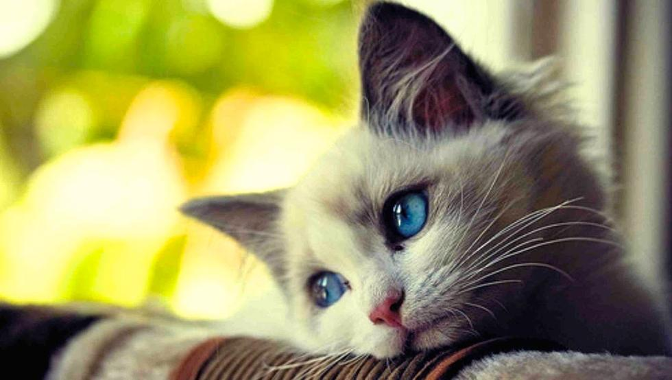

El gato doméstico (Felis silvestris catus), llamado popularmente gato, y de forma coloquial minino, michino, michi, micho, mizo, miz, morroño o morrongo, entre otros nombres, es un mamífero carnívoro de la familia Felidae. Es una subespecie domesticada
por la convivencia con el ser humano. El nombre actual en muchas lenguas proviene del latín vulgar catus. Paradójicamente, catus aludía a los gatos salvajes, mientras que los gatos domésticos, en latín, eran llamados felis.
